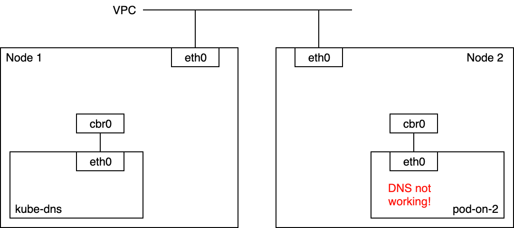
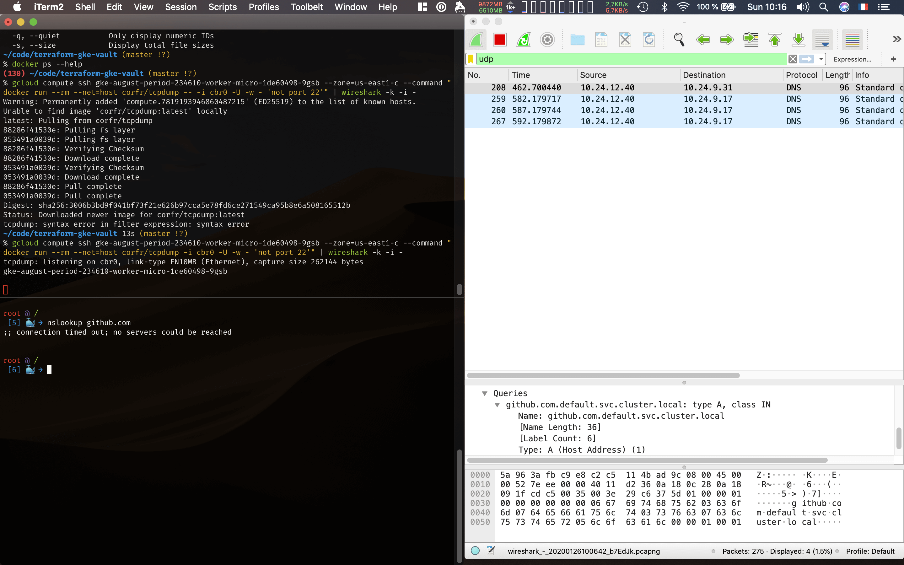
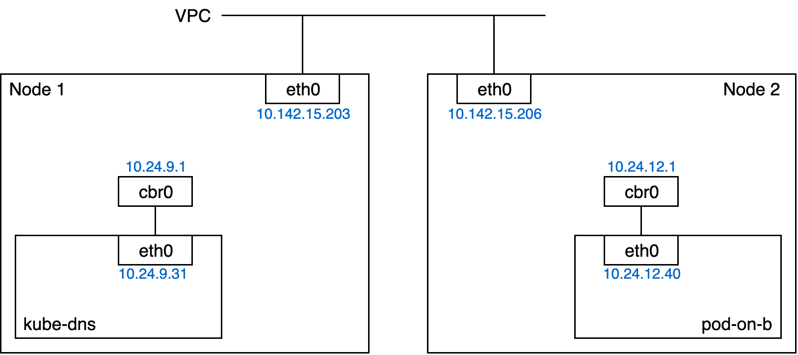
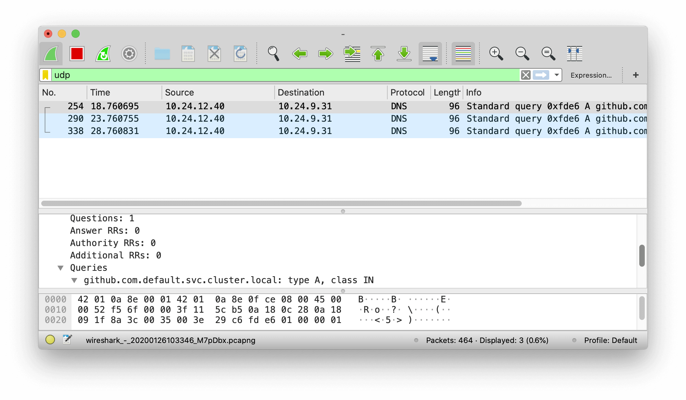
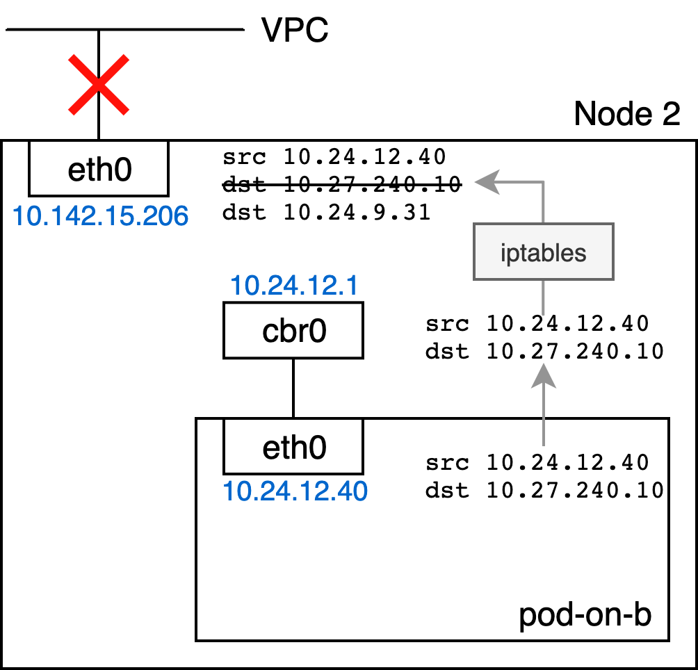
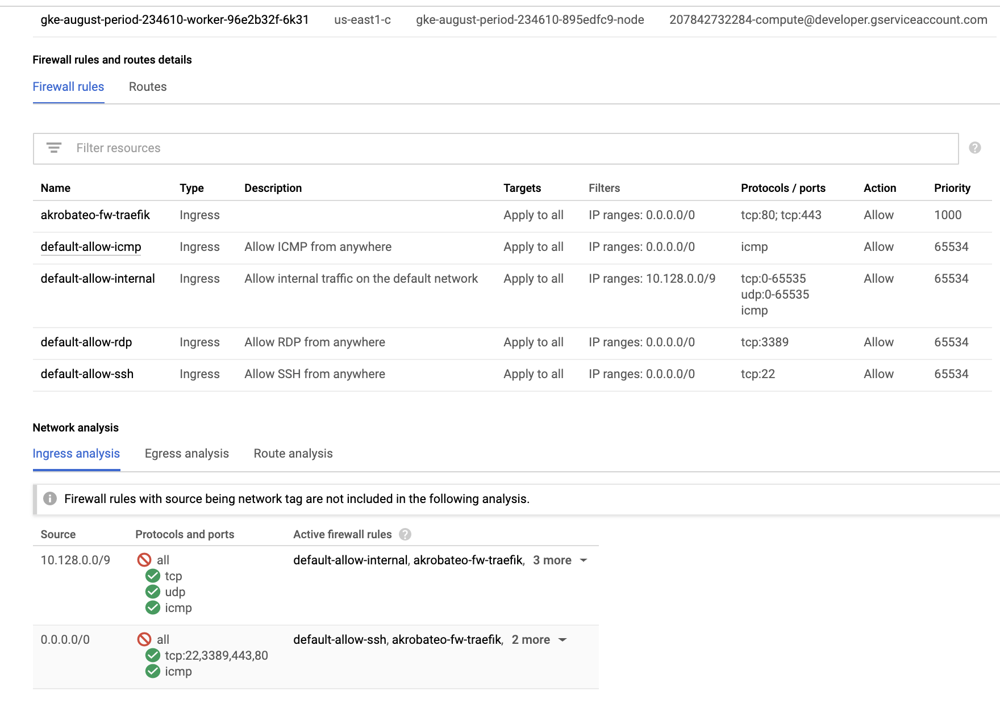

When I scaled my GKE cluster from one node to two nodes, I realised there was some DNS issues with one of the pods on the new Node 2 (that’s what I initially thought).

So I went into pod-on-2 (10.24.12.40) and checked that DNS wasn’t working. What I did is run
% gcloud compute ssh node-2
% docker run --rm -it --net=container:$(docker ps | grep POD_pod-on-2 | head -1 | cut -f1 -d" ") nicolaka/netshoot
% nslookup github.com
;; connection timed out; no servers could be reached
Let’s see if this DNS request actually goes out of the container. So I ran tcpdump on the cbr0 interface on node 2. cbr0 is the linux bridge used by Kubernetes (the bridge and the interface have the same name). Using Wireshark on top of tcpdump gives me easier-to-explore results:

Note that the actual name of Node 2 is gke-august-period-234610-worker-micro-1de60498-9gsb (now, you know!). Here is the command I used for opening wireshark on Node 2:
% gcloud compute ssh node-2 --command "docker run --rm --net=host corfr/tcpdump -i cbr0 -U -w - 'not port 22'" | wireshark -k -i -
tcpdump: listening on cbr0, link-type EN10MB (Ethernet), capture size 262144 bytes
What we see is that cbr0 properly receives UDP packets coming from the pod 10.24.12.40, and that the DNS address is 10.27.240.10. I double checked, 10.27.240.10 is the DNS address set in /etc/resolve.conf inside containers in this pod.
Here is the network setup with the IPs to get a better picture:

Let’s check that 10.27.240.10 is actually a service:
% kubectl -n kube-system get service kube-dns
NAME TYPE CLUSTER-IP EXTERNAL-IP PORT(S) AGE
kube-dns ClusterIP 10.27.240.10 <none> 53/UDP,53/TCP 34d
We now know that the DNS used in all the pods is the ClusterIP of the kube-dns service. That’s not a real pod IP, so the iptables should be translating that into an actual pod IP.
Now that we know that the packet goes to cbr0, is it forwarded to Node 2’s eth0? I used Wireshark again, but on eth0 this time:

Apparently, the packet destination has been re-written from 10.27.240.10 to 10.24.9.31 (an actual pod IP) which is good sign. This pod IP corresponds to one of the replicas of kube-dns on node 1, which seems fine.
At this point, I was wondering: are UDP packets from node 2 to node 1 properly routed?
mvalais@node-2 ~ $ docker run -it --rm --net=host nicolaka/netshoot
% nslookup github.com 10.27.240.10
Server: 10.27.240.10
Address: 10.27.240.10#53
Non-authoritative answer:
Name: github.com
Address: 192.30.253.113
Wait what? The DNS query to 10.27.240.10 works from the host but not from the pod? At this point, my guesses were:
- something wrong with the routes on the host,
- something is wrong with networking on node 1
- something is wrong with the iptables of node 2
- an issue with routing of
10.24.0.0/14on the VPC (it’s the CIDR allocated to this GKE cluster; the nodes themselves receive/24CIDRs from this range)
Let’s rule (1) out. Here is the L3 routing table on node 2:
mvalais@node-2 ~ $ docker run -it --rm --net=host nicolaka/netshoot
% ip route
default via 10.142.0.1 dev eth0 proto dhcp src 10.142.15.206 metric 1024
default via 10.142.0.1 dev eth0 proto dhcp
10.24.12.0/24 dev cbr0 proto kernel src 10.24.12.1
10.142.0.1 dev eth0 proto dhcp src 10.142.15.206 metric 1024
10.142.0.1 dev eth0 proto dhcp
169.254.123.0/24 dev docker0 proto kernel src 169.254.123.1 linkdown
Remembering that Node 2’s eth0 has the IP 10.142.15.206, it looks like all packets that are meant for Node 1’s kube-dns will use the first rule. So no problem on this side.
The (2) guess is easy to check: I ran tcpdump with wireshark on the eth0 of node 1. No trace of an UDP packet coming from 10.24.12.40. So the packets don’t even reach the node 1.
Let’s recap all we know: the packet goes from the pod’s eth0 to the linux bridge, and is then rewritten and forwarded to the host’s eth0.

So we are left with
- something is wrong with the iptables of node 2
- an issue with routing of
10.24.0.0/14on the VPC
I now realise that I could have ruled out the iptable issue since I could see the packet on Node 2’s eth0 interface. But I wanted to know how that packet was handled anyway!
So let’s dive into what iptables is doing to this packet. First, let’s see if a conntrack entry exists due to the DNAT rewriting:
# From the pod on Node 2:
% nslookup github.com
% mvalais@node-2 ~ $ docker run --net=host --privileged --rm missioncriticalkubernetes/conntrack -L | grep 10.24
conntrack v1.4.4 (conntrack-tools): 52 flow entries have been shown.
udp 17 26 src=10.24.12.40 dst=10.27.240.10 sport=57400 dport=53 [UNREPLIED] src=10.24.9.31 dst=10.24.12.40 sport=53 dport=57400 mark=0 use=1
# From Node 2's host networking:
% nslookup github.com 10.27.240.10
% mvalais@node-2 ~ $ docker run --net=host --privileged --rm missioncriticalkubernetes/conntrack -L | grep 10.24
udp 17 175 src=10.142.15.206 dst=10.27.240.10 sport=37337 dport=53 src=10.24.9.31 dst=10.142.15.206 sport=53 dport=37337 [ASSURED] mark=0 use=1
Coming from the pod, we see that the DNAT rewriting happened but the connection status is UNREPLIED. Coming from the host, the DNAT rewriting also happened but the connection status is ASSURED, which means a reply has been given.
Now, the deep dive: let’s use iptables’ TRACE target to know how this packet gets rewritten when coming from the pod:
# From Node 2
% sudo modprobe ipt_LOG
% sudo iptables -A PREROUTING -t raw -s 10.24.0.0/16 -j TRACE
% sudo iptables -A PREROUTING -t raw -d 10.24.0.0/16 -j TRACE
% docker run --rm -it --net=container:$(docker ps | grep POD_pod-on-2 | head -1 | cut -f1 -d" ") --privileged nicolaka/netshoot nslookup github.com
% dmesg -w
[90332.179725] TRACE: raw:PREROUTING:policy:2 IN=cbr0 OUT= PHYSIN=veth4a3719bc SRC=10.24.12.40 DST=10.27.240.10 LEN=82 TOS=0x00 PREC=0x00 TTL=64 ID=43592 PROTO=UDP SPT=36775 DPT=53 LEN=62
[90332.200327] TRACE: mangle:PREROUTING:policy:1 IN=cbr0 OUT= PHYSIN=veth4a3719bc SRC=10.24.12.40 DST=10.27.240.10 LEN=82 TOS=0x00 PREC=0x00 TTL=64 ID=43592 PROTO=UDP SPT=36775 DPT=53 LEN=62
[90332.221171] TRACE: nat:PREROUTING:rule:1 IN=cbr0 OUT= PHYSIN=veth4a3719bc SRC=10.24.12.40 DST=10.27.240.10 LEN=82 TOS=0x00 PREC=0x00 TTL=64 ID=43592 PROTO=UDP SPT=36775 DPT=53 LEN=62
[90332.241576] TRACE: nat:KUBE-SERVICES:rule:14 IN=cbr0 OUT= PHYSIN=veth4a3719bc SRC=10.24.12.40 DST=10.27.240.10 LEN=82 TOS=0x00 PREC=0x00 TTL=64 ID=43592 PROTO=UDP SPT=36775 DPT=53 LEN=62
[90332.262385] TRACE: nat:KUBE-SVC-TCOU7JCQXEZGVUNU:rule:2 IN=cbr0 OUT= PHYSIN=veth4a3719bc SRC=10.24.12.40 DST=10.27.240.10 LEN=82 TOS=0x00 PREC=0x00 TTL=64 ID=43592 PROTO=UDP SPT=36775 DPT=53 LEN=62
[90332.284116] TRACE: nat:KUBE-SEP-MQYG7Z5PYI3N6YFY:rule:2 IN=cbr0 OUT= PHYSIN=veth4a3719bc SRC=10.24.12.40 DST=10.27.240.10 LEN=82 TOS=0x00 PREC=0x00 TTL=64 ID=43592 PROTO=UDP SPT=36775 DPT=53 LEN=62
[90332.305838] TRACE: mangle:FORWARD:policy:1 IN=cbr0 OUT=eth0 PHYSIN=veth4a3719bc SRC=10.24.12.40 DST=10.24.9.31 LEN=82 TOS=0x00 PREC=0x00 TTL=63 ID=43592 PROTO=UDP SPT=36775 DPT=53 LEN=62
[90332.326491] TRACE: filter:FORWARD:rule:1 IN=cbr0 OUT=eth0 PHYSIN=veth4a3719bc SRC=10.24.12.40 DST=10.24.9.31 LEN=82 TOS=0x00 PREC=0x00 TTL=63 ID=43592 PROTO=UDP SPT=36775 DPT=53 LEN=62
[90332.346973] TRACE: filter:KUBE-FORWARD:return:4 IN=cbr0 OUT=eth0 PHYSIN=veth4a3719bc SRC=10.24.12.40 DST=10.24.9.31 LEN=82 TOS=0x00 PREC=0x00 TTL=63 ID=43592 PROTO=UDP SPT=36775 DPT=53 LEN=62
[90332.368068] TRACE: filter:FORWARD:rule:2 IN=cbr0 OUT=eth0 PHYSIN=veth4a3719bc SRC=10.24.12.40 DST=10.24.9.31 LEN=82 TOS=0x00 PREC=0x00 TTL=63 ID=43592 PROTO=UDP SPT=36775 DPT=53 LEN=62
[90332.389031] TRACE: filter:KUBE-SERVICES:return:1 IN=cbr0 OUT=eth0 PHYSIN=veth4a3719bc SRC=10.24.12.40 DST=10.24.9.31 LEN=82 TOS=0x00 PREC=0x00 TTL=63 ID=43592 PROTO=UDP SPT=36775 DPT=53 LEN=62
[90332.410253] TRACE: filter:FORWARD:rule:3 IN=cbr0 OUT=eth0 PHYSIN=veth4a3719bc SRC=10.24.12.40 DST=10.24.9.31 LEN=82 TOS=0x00 PREC=0x00 TTL=63 ID=43592 PROTO=UDP SPT=36775 DPT=53 LEN=62
[90332.430735] TRACE: filter:DOCKER-USER:return:1 IN=cbr0 OUT=eth0 PHYSIN=veth4a3719bc SRC=10.24.12.40 DST=10.24.9.31 LEN=82 TOS=0x00 PREC=0x00 TTL=63 ID=43592 PROTO=UDP SPT=36775 DPT=53 LEN=62
[90332.451887] TRACE: filter:FORWARD:rule:4 IN=cbr0 OUT=eth0 PHYSIN=veth4a3719bc SRC=10.24.12.40 DST=10.24.9.31 LEN=82 TOS=0x00 PREC=0x00 TTL=63 ID=43592 PROTO=UDP SPT=36775 DPT=53 LEN=62
[90332.472366] TRACE: filter:DOCKER-ISOLATION-STAGE-1:return:2 IN=cbr0 OUT=eth0 PHYSIN=veth4a3719bc SRC=10.24.12.40 DST=10.24.9.31 LEN=82 TOS=0x00 PREC=0x00 TTL=63 ID=43592 PROTO=UDP SPT=36775 DPT=53 LEN=62
[90332.494488] TRACE: filter:FORWARD:rule:10 IN=cbr0 OUT=eth0 PHYSIN=veth4a3719bc SRC=10.24.12.40 DST=10.24.9.31 LEN=82 TOS=0x00 PREC=0x00 TTL=63 ID=43592 PROTO=UDP SPT=36775 DPT=53 LEN=62
[90332.515049] TRACE: mangle:POSTROUTING:policy:1 IN= OUT=eth0 PHYSIN=veth4a3719bc SRC=10.24.12.40 DST=10.24.9.31 LEN=82 TOS=0x00 PREC=0x00 TTL=63 ID=43592 PROTO=UDP SPT=36775 DPT=53 LEN=62
[90332.531693] TRACE: nat:POSTROUTING:rule:1 IN= OUT=eth0 PHYSIN=veth4a3719bc SRC=10.24.12.40 DST=10.24.9.31 LEN=82 TOS=0x00 PREC=0x00 TTL=63 ID=43592 PROTO=UDP SPT=36775 DPT=53 LEN=62
[90332.547953] TRACE: nat:KUBE-POSTROUTING:return:2 IN= OUT=eth0 PHYSIN=veth4a3719bc SRC=10.24.12.40 DST=10.24.9.31 LEN=82 TOS=0x00 PREC=0x00 TTL=63 ID=43592 PROTO=UDP SPT=36775 DPT=53 LEN=62
[90332.564769] TRACE: nat:POSTROUTING:rule:2 IN= OUT=eth0 PHYSIN=veth4a3719bc SRC=10.24.12.40 DST=10.24.9.31 LEN=82 TOS=0x00 PREC=0x00 TTL=63 ID=43592 PROTO=UDP SPT=36775 DPT=53 LEN=62
[90332.580978] TRACE: nat:IP-MASQ:rule:2 IN= OUT=eth0 PHYSIN=veth4a3719bc SRC=10.24.12.40 DST=10.24.9.31 LEN=82 TOS=0x00 PREC=0x00 TTL=63 ID=43592 PROTO=UDP SPT=36775 DPT=53 LEN=62
[90332.596840] TRACE: nat:POSTROUTING:policy:4 IN= OUT=eth0 PHYSIN=veth4a3719bc SRC=10.24.12.40 DST=10.24.9.31 LEN=82 TOS=0x00 PREC=0x00 TTL=63 ID=43592 PROTO=UDP SPT=36775 DPT=53 LEN=62
The last list, POSTROUTING, makes it clear that the packet is properly sent to the host’s eth0 with src 10.24.12.40 and dst 10.24.9.31. The packet should get to node 1 now!
I noticed that using -j TRACE is extremely expensive. For example, using -p icmp would result in pings going from 1ms (without tracing) to 500ms. I also overloaded one of the nodes by adding a rule that was “too wide” and nearly killed the entire node. Use tracing filters (-s, -p, -d) as narrow as possible!
So UDP traffic doesn’t get routed. But what about ICMP and TCP packets? I had previously noticed that ping would work from 10.24.12.40 to 10.24.9.31.
Let’s see if TCP traffic also works. This time, instead of ssh-ing into the nodes and running docker, I used --generator=run-pod/v1 and --override in order to choose on which node the pod is launched. Here is a sample of what I give to --override for running a pod on node-2:
apiVersion: v1
spec:
affinity:
nodeAffinity:
requiredDuringSchedulingIgnoredDuringExecution:
nodeSelectorTerms:
- matchFields:
- key: metadata.name
operator: In
values: [node-2]
From a pod on Node 1 (10.24.9.32):
% kubectl run --generator=run-pod/v1 tmp-host-a --overrides='{"apiVersion":"v1","spec":{"affinity":{"nodeAffinity":{"requiredDuringSchedulingIgnoredDuringExecution":{"nodeSelectorTerms":[{"matchFields":[{"key":"metadata.name","operator":"In","values":["node-1"]}]}]}}}}}' --rm -i --tty --image nicolaka/netshoot
% nc -v 10.24.12.41 80
Connection to 10.24.12.41 80 port [tcp/http] succeeded!
From a pod on Node 2 (10.24.12.41):
% kubectl run --generator=run-pod/v1 tmp-host-b --overrides='{"apiVersion":"v1","spec":{"affinity":{"nodeAffinity":{"requiredDuringSchedulingIgnoredDuringExecution":{"nodeSelectorTerms":[{"matchFields":[{"key":"metadata.name","operator":"In","values":["node-2"]}]}]}}}}}' --rm -i --tty --image nicolaka/netshoot
% nc -v -l 80
Listening on [0.0.0.0] (family 0, port 80)
Connection from 10.24.9.32 38274 received!
The traffic on 80/tcp definitely seems to work from Node 1 to Node 2! Now, let’s try the same but with 53/tcp and from Node 2 to Node 1.
From pod on Node 1 (10.24.9.32):
% nc -v -l 53
Listening on [0.0.0.0] (family 0, port 53)
From pod on Node 2 (10.24.12.41):
% curl 10.24.9.32:53
curl: (28) Failed to connect to 10.24.9.32 port 53: Operation timed out
To recap, only 80/tcp, 443/tcp and icmp packets are routed. It’s surprisingly very specific: what if the VPC firewall rules were off? That was my last guess, but I guess it should have been myst first…
Two weeks ago, I remember having deleted some left-over rules when I was playing with Kops. I might have deleted one of the rules that allowed this traffic to flow!
Here is what the UI shows:

Even easier-to-read, using gcloud:
% gcloud compute firewall-rules list
NAME NETWORK DIRECTION PRIORITY ALLOW
akrobateo-fw-traefik default INGRESS 1000 tcp:80,tcp:443
default-allow-icmp default INGRESS 65534 icmp
default-allow-internal default INGRESS 65534 tcp:0-65535,udp:0-65535,icmp
default-allow-rdp default INGRESS 65534 tcp:3389
default-allow-ssh default INGRESS 65534 tcp:22
How is the traffic using the 10.24.0.0/14 subnet supposed to be routed? This subnet was allocated to this GKE cluster; node 1 was given the CIDR 10.24.9.0/24 and node 2 was given the CIDR 10.24.12.0/24.
So I added a new rule gke-august-period-234610-all (august-period-234610 is the name of my project); it looks like that:
NAME NETWORK DIRECTION PRIORITY ALLOW DENY DISABLED
gke-august-period-234610-all default INGRESS 1000 udp,icmp,esp,ah,sctp,tcp False
Now, let’s test again using 53/udp:
Pod on Node 2 (10.24.12.41):
% nc -v -u 10.24.9.32 8888
# Exits with 0 and no output
Pod on Node 1 (10.24.9.32):
% tcpdump
tcpdump: verbose output suppressed, use -v or -vv for full protocol decode
listening on eth0, link-type EN10MB (Ethernet), capture size 262144 bytes
21:54:39.787779 IP 10.24.12.41.40760 > tmp-host-a.8888: UDP, length 1
21:54:39.787802 IP tmp-host-a > 10.24.12.41: ICMP tmp-host-a udp port 8888 unreachable, length 37
21:54:39.787805 IP 10.24.12.41.40760 > tmp-host-a.8888: UDP, length 1
21:54:39.787808 IP tmp-host-a > 10.24.12.41: ICMP tmp-host-a udp port 8888 unreachable, length 37
Yay! In the end, the issue was not so deep… A manual edit to the firewall rules that I had not thought through and for which I have no record of. I already terraformed a lot of the cluster and node creation, but I should definitely move everything to terraform and stop doing manual edits that can’t be traced back!